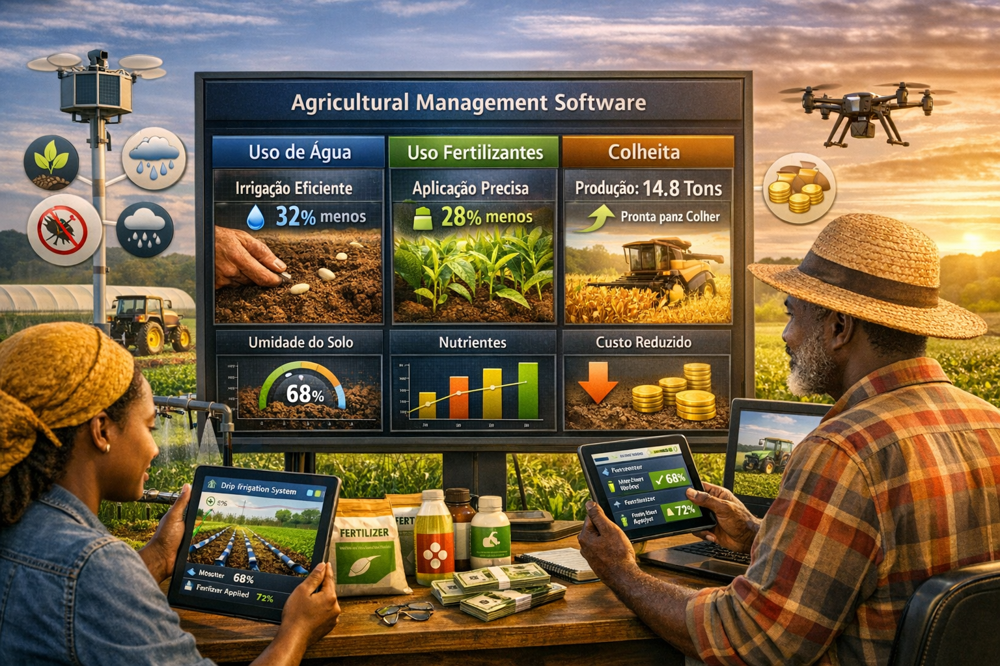
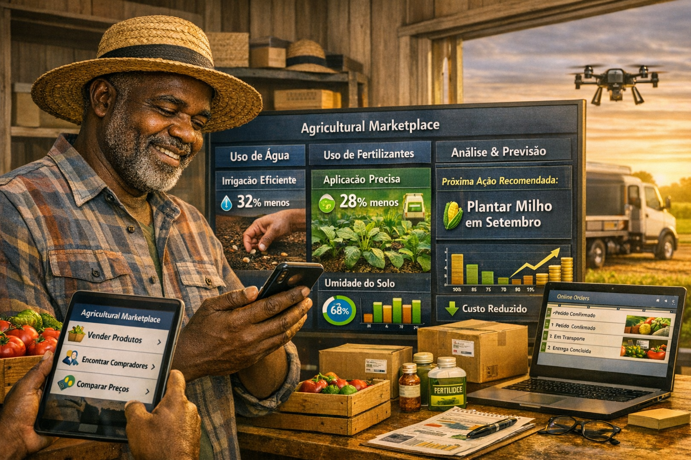
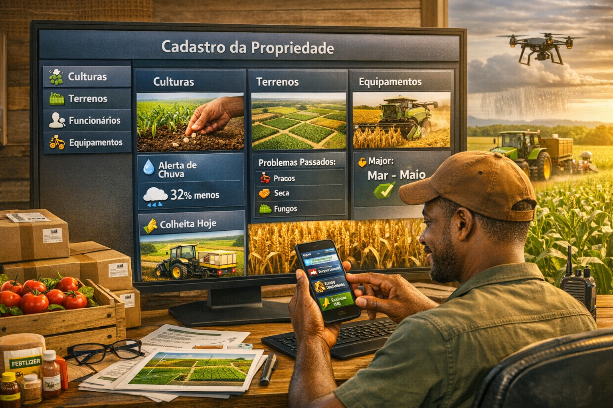

📘 Manual do Agricultor 4.0
Vantagens do Software de Gestão Agrícola | Edição Angola – Malanje
Sumário
🌱 01. Introdução: Porque um software de gestão agrícola?
Em Angola, a agricultura familiar e empresarial enfrenta desafios como falta de registo, perda de dados, má gestão financeira e dificuldade de acesso a mercados. Um software de gestão agrícola transforma dados em decisões, aumentando a produtividade e a rentabilidade. Este manual apresenta 8 vantagens principais, com exemplos adaptados à região de Malanje – o celeiro do país.

📊 02. Controlo total da produção e finanças
📈 Acompanhamento da produção
Registe cada talhão: data de plantio, variedade, tratamentos fitossanitários, crescimento e colheita. Compare safras e identifique quais práticas geram mais resultados. Em Malanje, produtores de milho aumentaram a produtividade em 35% após usar o sistema.

💰 Gestão financeira integrada
Insira despesas (sementes, adubos, mão-de-obra, combustível) e receitas de vendas. O software gera balanços, margem de lucro por cultura e alerta se os custos estão acima do planeado. Um agricultor de mandioca em Cacuso reduziu 20% de desperdício e aumentou o lucro em 40% no primeiro ano.

🚜 03. Optimização de recursos e decisões inteligentes
💧 Uso racional de água e fertilizantes
Sensores (ou registos manuais) indicam a humidade do solo e necessidades hídricas. O software sugere o momento ideal de irrigar, reduzindo o consumo em até 40%. Em Malanje, a escassez de água no cacimbo é um desafio – com a ferramenta, os agricultores poupam e mantêm a produção.

🧠 Decisões baseadas em dados históricos
O sistema armazena dados climáticos, produtividade anterior e preços de venda. Com relatórios, o agricultor decide: "Devo plantar feijão ou amendoim nesta época?" ou "Quando vender para obter melhor preço?" Um cooperativa em Malanje evitou perdas de 15% na colheita ao seguir as recomendações do software.

🌍 04. Acesso ao mercado, mobilidade e gestão completa
🛒 Marketplace agrícola integrado
O software permite listar a produção, contactar compradores e comparar preços praticados no SIMA e em mercados locais. Um agricultor de tomate em Malanje passou a vender directamente a restaurantes, eliminando intermediários e aumentando a margem em 50%.

📱 Mobilidade e gestão no campo
Aplicação móvel (PWA) regista actividades offline, tira fotos de pragas e sincroniza quando há internet. Receba alertas de chuva forte ou geada. Em zonas rurais de Malanje, a conectividade é limitada, mas o modo offline garante que nenhum dado se perde.

🗂️ Cadastro completo da propriedade
Registe talhões, máquinas, insumos, funcionários e até animais. Controle de manutenção, estoque e folha de pagamento. Tudo num só lugar, acessível por vários utilizadores (proprietário, gestor, capataz).

⚠️ 05. Redução de riscos e casos práticos em Malanje
🔔 Alertas de pragas e clima
Integração com dados meteorológicos e modelos de previsão de pragas (ex: lagarta do cartucho do milho). O agricultor recebe notificações com 48h de antecedência. Na safra 2024, um produtor em Malanje evitou a perda total de 5 hectares graças ao alerta antecipado.

🏆 Caso de sucesso – Associação dos Agricultores de Malanje
Após 12 meses a usar o AgroLux, a associação reportou: aumento de 45% na produtividade do milho, redução de 30% nos custos com fertilizantes (com uso de compostagem recomendada pelo sistema) e acesso a novos mercados na província. O software evitou a quebra de safra durante a estiagem de 2024 ao sugerir irrigação suplementar.

📍 AgroLux em Malanje – O Coração Agrícola de Angola
Nossa fazenda modelo e centro de formação estão localizados estrategicamente na província de Malanje, onde o potencial agrícola é imenso.